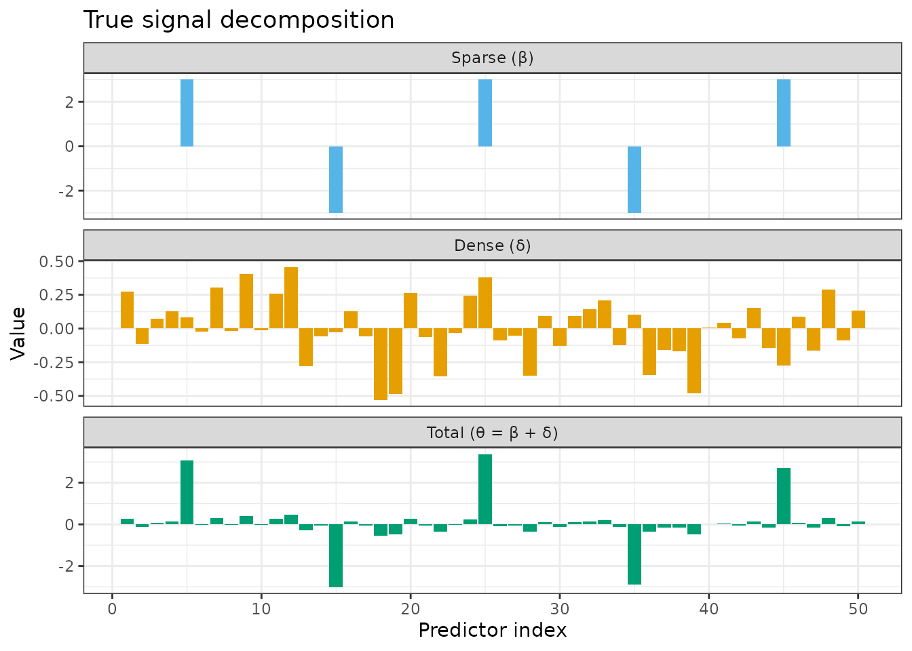
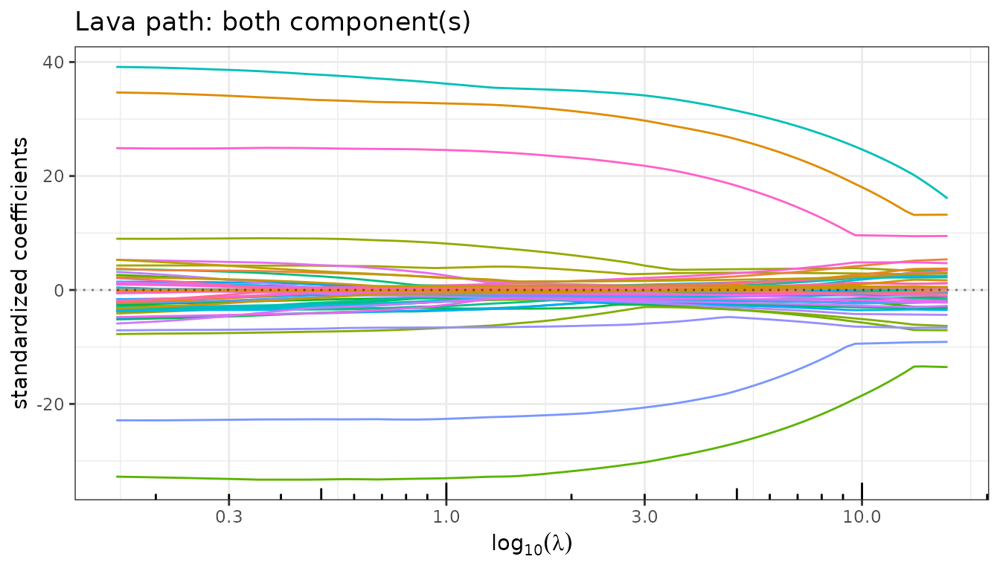
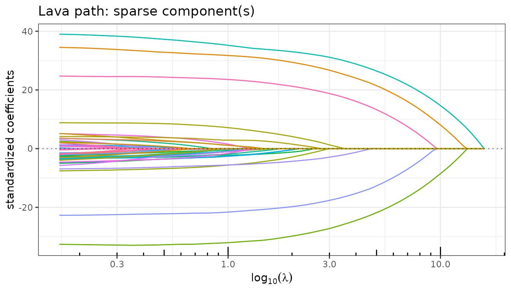
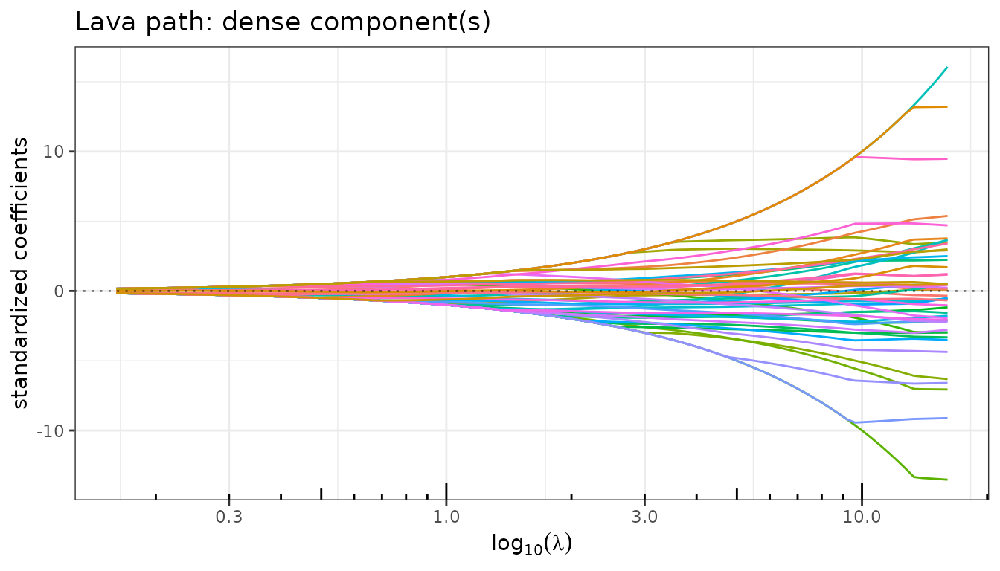
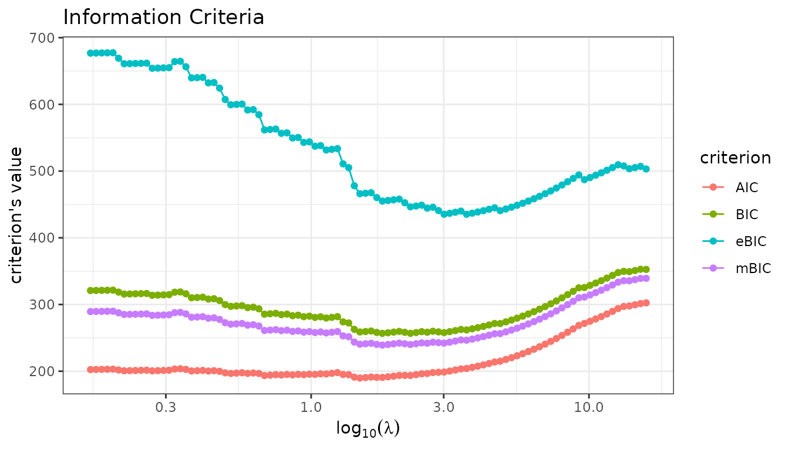
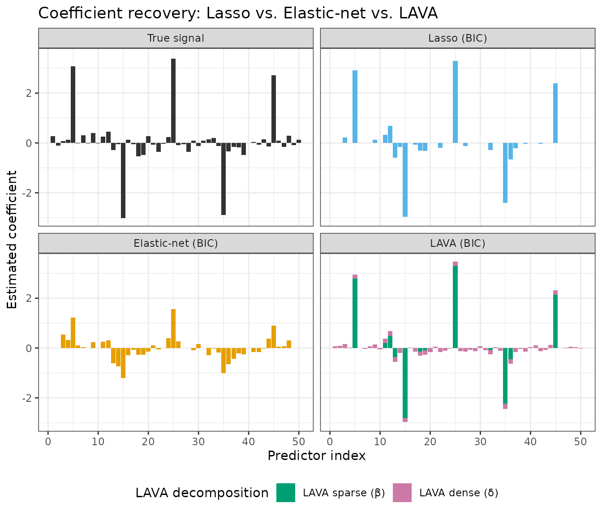
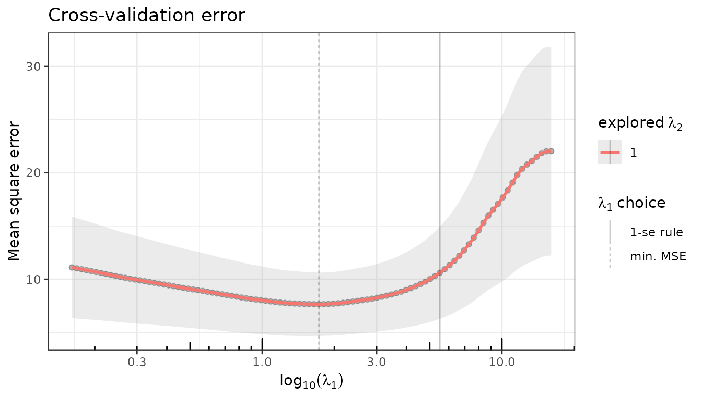
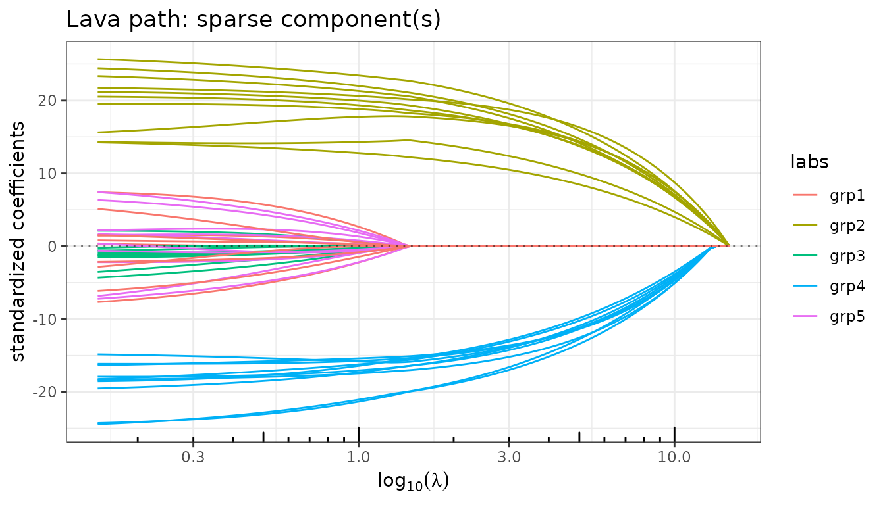
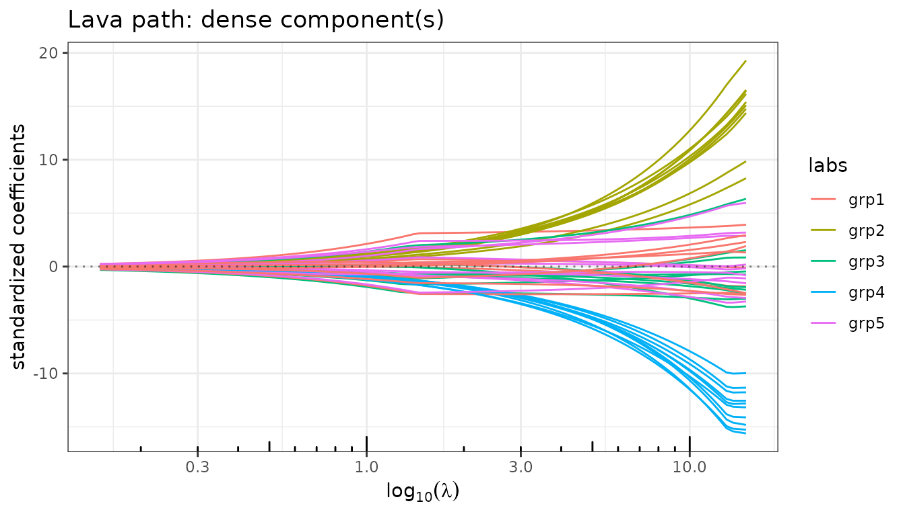

LAVA: Recovering Sums of Sparse and Dense Signals
The lava() and group_lava() estimators in quadrupen
Source:vignettes/lava.Rmd
lava.RmdMotivation
Classical sparse estimators such as the Lasso assume that the true coefficient vector \(\theta\) is itself sparse: only a few entries are nonzero. This assumption fails when the signal has a mixed structure — a small number of large, identifiable effects superimposed on a broad background of many small effects. In this case neither the Lasso (too sparse) nor ridge regression (too dense) is well-suited.
The LAVA estimator (Chernozhukov, Hansen & Liao, Annals of Statistics, 2017) explicitly decomposes the coefficient vector as
\[\theta = \beta + \delta,\]
where \(\beta\) is the sparse component (penalized by \(\lambda_1 \|\beta\|_1\)) and \(\delta\) is the dense component (penalized by \(\frac{\lambda_2}{2} \delta^\top S\, \delta\)). The joint criterion is
\[\min_{\theta = \beta + \delta} \frac{1}{2n} \|y - X(\beta + \delta)\|^2 + \lambda_1 \|\beta\|_1 + \frac{\lambda_2}{2}\, \delta^\top S\, \delta,\]
where \(S\) is a positive
semidefinite structuring matrix (identity by default). By varying \(\lambda_1\) along a regularization path
(with \(\lambda_2\) fixed),
quadrupen fits this model via lava() and
returns an object of class LavaFit that gives access to
both components separately.
Setup
Simulation: a mixed sparse + dense signal
We simulate a linear model where the true signal is the sum of a sparse part \(\beta\) (five isolated large effects) and a dense part \(\delta\) (small Gaussian perturbations on every predictor). Neither component alone characterizes the signal.
set.seed(42)
n <- 100
p <- 50
## Sparse component: 5 large effects, the rest zero
beta <- numeric(p)
beta[c(5, 15, 25, 35, 45)] <- c(3, -3, 3, -3, 3)
## Dense component: small effects on all predictors
delta <- rnorm(p, mean = 0, sd = 0.2)
## Total signal
theta <- beta + delta
## Predictors with moderate AR(1) correlation
rho <- 0.5
Sigma <- toeplitz(rho^(0:(p - 1)))
X <- matrix(rnorm(n * p), n, p) %*% chol(Sigma)
y <- X %*% theta + rnorm(n, sd = 2)
df_truth <- data.frame(
index = rep(1:p, 3),
value = c(beta, delta, theta),
component = factor(
rep(c("Sparse (β)", "Dense (δ)", "Total (θ = β + δ)"), each = p),
levels = c("Sparse (β)", "Dense (δ)", "Total (θ = β + δ)")
)
)
ggplot(df_truth, aes(x = index, y = value, fill = component)) +
geom_col() +
facet_wrap(~ component, ncol = 1, scales = "free_y") +
scale_fill_manual(values = c("#56B4E9", "#E69F00", "#009E73"), guide = "none") +
labs(x = "Predictor index", y = "Value",
title = "True signal decomposition") +
theme_bw()
Fitting with lava()
lava() takes the same interface as
sparse_lm(). The lambda2 argument controls the
ridge-like penalty on the dense component.
fit_lava <- lava(X, y, lambda2 = 1)
fit_lava
#> Linear regression with lava penalizer.
#> - number of coefficients: 50 + intercept
#> - lambda regularization: 100 points from 16.1 to 0.161
#> - gamma regularization: 1The returned object is an R6 instance of class LavaFit,
inheriting from QuadrupenFit. In addition to all the
standard fields and methods ($coefficients,
$criteria(), $cross_validate(), etc.), it
exposes two component-specific fields:
-
$sparse_coef: the sparse part \(\hat\beta\) — a \(p \times |\lambda_1|\) matrix along the path. -
$dense_coef: the dense part \(\hat\delta = \hat\theta - \hat\beta\) — same dimensions.
Regularization paths by component
$plot_path() accepts a component argument
("both", "sparse", "dense") to
display each part of the decomposition independently.
fit_lava$plot_path(component = "both", labels = NULL)
fit_lava$plot_path(component = "sparse", labels = NULL)
fit_lava$plot_path(component = "dense", labels = NULL)


As \(\lambda_1\) increases (right to left on the path):
- The sparse path shows the usual Lasso-like variable selection: large effects enter early and small ones remain zero.
- The dense path is smooth and non-zero everywhere: the ridge penalty ensures that \(\hat\delta\) is distributed across all predictors.
- The total path combines both: it never reaches exactly zero because the dense component picks up residual signal.
Model Selection
Let us plot the information criteria along the path. The BIC and eBIC select a model with a couple of large effects in the sparse part, while AIC selects a more complex model with more non-zero entries in the sparse component. mBIC is more conservative, as expected.
fit_lava$information_criteria$plot(c("AIC", "BIC", "eBIC", "mBIC"))
Model extraction and decomposition
$get_model() extracts the total estimated coefficient
\(\hat\theta\) at a selected \(\lambda_1\). The corresponding sparse and
dense components can be recovered from $sparse_coef and
$dense_coef at the same index.
idx <- fit_lava$get_model("BIC", type = "index")
theta_hat <- fit_lava$get_model("BIC")[-1] # drop intercept
beta_hat <- as.numeric(fit_lava$sparse_coef[, idx])
delta_hat <- as.numeric(fit_lava$dense_coef[, idx])
cat("Non-zero entries in sparse component (BIC):",
sum(beta_hat != 0), "\n")
#> Non-zero entries in sparse component (BIC): 12
cat("Non-zero entries in dense component (BIC): ",
sum(delta_hat != 0), "\n")
#> Non-zero entries in dense component (BIC): 50
cat("Positions with |beta_hat| > 1:",
which(abs(beta_hat) > 1), "\n")
#> Positions with |beta_hat| > 1: 5 15 25 35 45The sparse component correctly locates the five large effects — those
with |beta_hat| > 1 match the true positions exactly.
The dense component is non-zero everywhere, absorbing the background of
small signals.
Comparing estimators
We compare LAVA against the Lasso and Elastic-net at their
BIC-selected models. In the LAVA panel, bars are split into two layers
drawn with geom_col: the total estimate
\(\hat\theta = \hat\beta + \hat\delta\)
is drawn first (pink, dense component), and the sparse
component \(\hat\beta\) is overlaid on
top (green). The remaining pink portion at the tips of active bars
represents the dense contribution \(\hat\delta\); the small pink bars at
inactive positions are the dense signal alone.
fit_lasso <- lasso(X, y)
fit_enet <- elastic_net(X, y, lambda2 = 1)
get_coef <- function(fit) {
b <- fit$get_model("BIC")
if ("Intercept" %in% names(b)) b <- b[-1]
as.numeric(b)
}
method_levels <- c("True signal", "Lasso (BIC)", "Elastic-net (BIC)", "LAVA (BIC)")
## Non-LAVA panels: one bar per predictor
df_base <- rbind(
data.frame(method = "True signal", index = 1:p,
value = theta, fill_grp = "True signal"),
data.frame(method = "Lasso (BIC)", index = 1:p,
value = get_coef(fit_lasso), fill_grp = "Lasso"),
data.frame(method = "Elastic-net (BIC)", index = 1:p,
value = get_coef(fit_enet), fill_grp = "Elastic-net")
)
df_base$method <- factor(df_base$method, levels = method_levels)
## LAVA panel: dense total drawn first, sparse component overlaid on top
df_lava_dense <- data.frame(
method = factor("LAVA (BIC)", levels = method_levels),
index = 1:p,
value = as.numeric(theta_hat),
fill_grp = "LAVA dense (δ̂)"
)
df_lava_sparse <- data.frame(
method = factor("LAVA (BIC)", levels = method_levels),
index = 1:p,
value = beta_hat,
fill_grp = "LAVA sparse (β̂)"
)
fill_palette <- c(
"True signal" = "grey20",
"Lasso" = "#56B4E9",
"Elastic-net" = "#E69F00",
"LAVA dense (δ̂)" = "#CC79A7",
"LAVA sparse (β̂)" = "#009E73"
)
ggplot(mapping = aes(x = index, y = value, fill = fill_grp)) +
geom_col(data = df_base) +
geom_col(data = df_lava_dense) +
geom_col(data = df_lava_sparse) +
facet_wrap(~ method, ncol = 2) +
scale_fill_manual(
values = fill_palette,
breaks = c("LAVA sparse (β̂)", "LAVA dense (δ̂)"),
name = "LAVA decomposition"
) +
labs(x = "Predictor index", y = "Estimated coefficient",
title = "Coefficient recovery: Lasso vs. Elastic-net vs. LAVA") +
theme_bw() +
theme(legend.position = "bottom")
#> Warning in min(x): no non-missing arguments to min; returning Inf
#> Warning in max(x): no non-missing arguments to max; returning -Inf
#> Warning in min(x): no non-missing arguments to min; returning Inf
#> Warning in max(x): no non-missing arguments to max; returning -Inf
#> Warning in min(x): no non-missing arguments to min; returning Inf
#> Warning in max(x): no non-missing arguments to max; returning -Inf
#> Warning in min(x): no non-missing arguments to min; returning Inf
#> Warning in max(x): no non-missing arguments to max; returning -Inf
#> Warning in min(x): no non-missing arguments to min; returning Inf
#> Warning in max(x): no non-missing arguments to max; returning -Inf
#> Warning in min(x): no non-missing arguments to min; returning Inf
#> Warning in max(x): no non-missing arguments to max; returning -Inf
#> Warning in min(x): no non-missing arguments to min; returning Inf
#> Warning in max(x): no non-missing arguments to max; returning -Inf
- The Lasso selects a handful of predictors but cannot represent the dense background.
- The Elastic-net spreads a small weight across more predictors, but conflates the two structural components.
- LAVA explicitly decomposes the signal: the green bars identify the large sparse effects precisely; the pink portions (small rims at active positions, full bars at inactive positions) capture the diffuse dense background.
Cross-validation
$cross_validate() works identically to the other
QuadrupenFit subclasses.
set.seed(42)
fit_lava$cross_validate(K = 10, verbose = FALSE)
fit_lava$plot(type = "crossval")
set.seed(42)
fit_lasso$cross_validate(K = 10, verbose = FALSE)
fit_enet$cross_validate(K = 10, verbose = FALSE)
idx_cv <- fit_lava$get_model("CV_min", type = "index")
beta_cv <- as.numeric(fit_lava$sparse_coef[, idx_cv])
cat("Non-zero entries in sparse component (CV_min):",
sum(beta_cv != 0), "\n")
#> Non-zero entries in sparse component (CV_min): 13
cat("Positions with |beta_cv| > 1:",
which(abs(beta_cv) > 1), "\n")
#> Positions with |beta_cv| > 1: 5 15 25 35 45Group LAVA: group-sparse + dense decomposition
group_lava() extends LAVA by replacing the element-wise
\(\ell_1\) penalty on \(\beta\) with a group-wise mixed norm \(\Omega_g(\beta)\):
\[\min_{\theta = \beta + \delta} \frac{1}{2n} \|y - X(\beta + \delta)\|^2 + \lambda_1\, \Omega_g(\beta) + \frac{\lambda_2}{2}\, \delta^\top S\, \delta.\]
This is appropriate when the sparse component has group
structure: entire groups of predictors are either active or
silent. The type argument selects the group norm (\(\ell_1/\ell_2\) by default, or \(\ell_1/\ell_\infty\)).
Simulation with a group-sparse signal
## 5 groups of 10 predictors; groups 2 and 4 are active in the sparse part
group <- rep(1:5, each = 10)
beta_g <- rep(c(0, 2, 0, -2, 0), each = 10)
delta_g <- rnorm(p, mean = 0, sd = 0.2)
theta_g <- beta_g + delta_g
y2 <- X %*% theta_g + rnorm(n, sd = 2)
group_names <- paste0("grp", 1:5)
var_labels <- group_names[group]Fitting
fit_gl <- group_lava(X, y2, group = group, lambda2 = 1)
fit_gl
#> Linear regression with group.lasso l1/l2 penalizer.
#> - number of coefficients: 50 + intercept
#> - lambda regularization: 100 points from 14.9 to 0.149
#> - gamma regularization: 1Paths of the sparse and dense components
fit_gl$plot_path(component = "sparse", labels = var_labels)
fit_gl$plot_path(component = "dense", labels = var_labels)

The sparse path shows entire groups entering the model simultaneously (Group Lasso behaviour), while the dense path remains diffuse and non-zero everywhere.
Model selection
For group selection problems, eBIC (which carries a stronger penalty of \(\log(n) + 2\log(p)\)) is generally more conservative than BIC and better adapted to identifying which groups are truly active.
Group identification
idx_ebic <- fit_gl$get_model("eBIC", type = "index")
beta_g_hat <- as.numeric(fit_gl$sparse_coef[, idx_ebic])
active_groups <- unique(group[beta_g_hat != 0])
cat("Active groups in sparse component (eBIC):", group_names[active_groups], "\n")
#> Active groups in sparse component (eBIC): grp2 grp4Reference
Chernozhukov, V., Hansen, C., & Liao, Y. (2017). A lava attack on the recovery of sums of dense and sparse signals. The Annals of Statistics, 45(1), 39–76. https://doi.org/10.1214/16-AOS1434